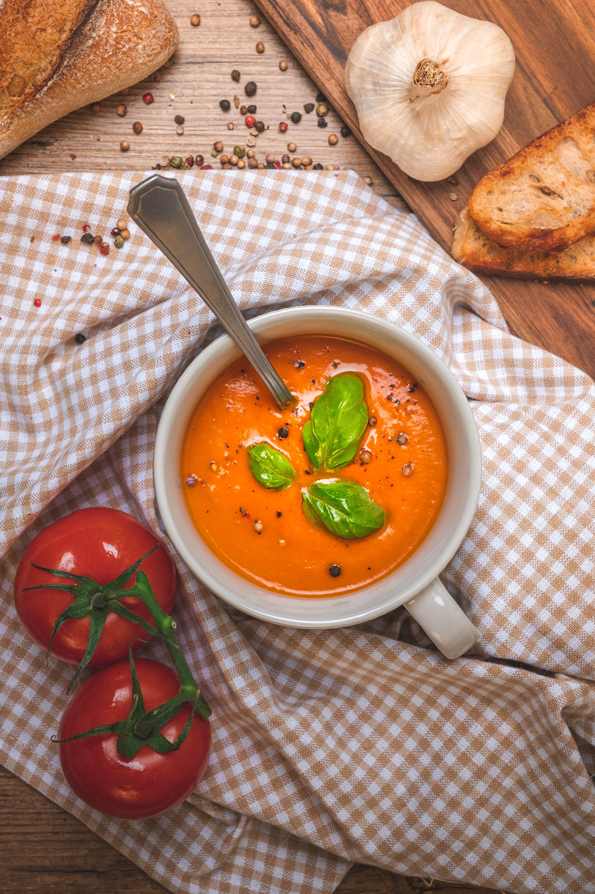

Soup

Description
A comforting bowl of tomato soup is many peoples childhood comfort meal. You can eat it with grilled cheese, croutons, or plain. Either way, its delicious!
Ingredients
- 3 pounds roma tomatoes, quartered
- 1 yellow onion, quartered
- 5 cloves garlic, halved
- 14 leaves fresh basil
- 5 cups low sodium chicken broth
- 1 cup heavy whipping cream
- 1/4 cup butter
- 3 tbsp olive oil
Directions
- Preheat oven to 400 degrees F. Line a baking sheet with either parchment paper or tinfoil.
- Spread the tomato and onion on the baking sheet. Coat the tomato and onion with olive oil, salt and pepper.
- Roast the veggies in the oven for 30 minutes. Add garlic to the baking sheet and continue roasting for 15 minutes or until the tomatoes are tender.
- While roasting the veggies, bring the chicken broth to boil.
- When the vegetables are done roasting, blend half of them at a time with the basil. Add both of the blended mixture to the chicken broth.
- Stir in heavy cream and butter. Cook over medium heat and stir continuously until the butter is melted. Do not boil the soup.
- Taste for seasoning. add salt or pepper to taste. Serve hot and enjoy!